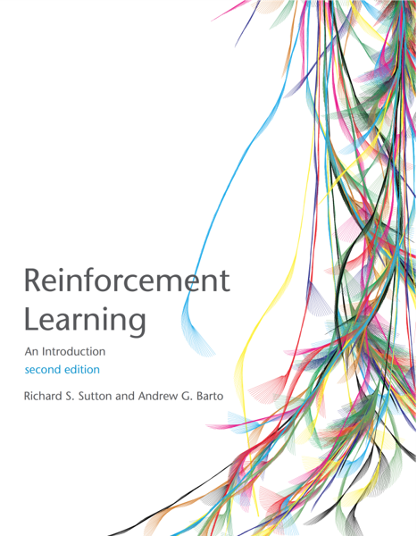
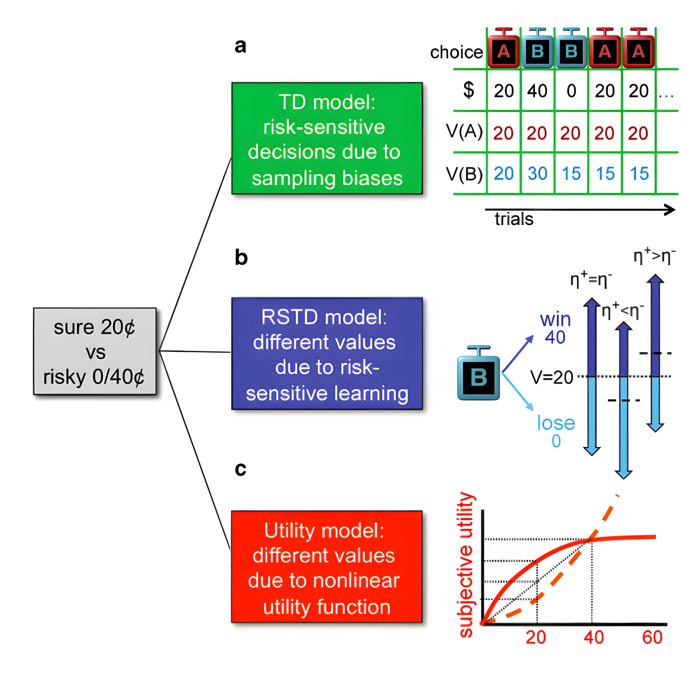
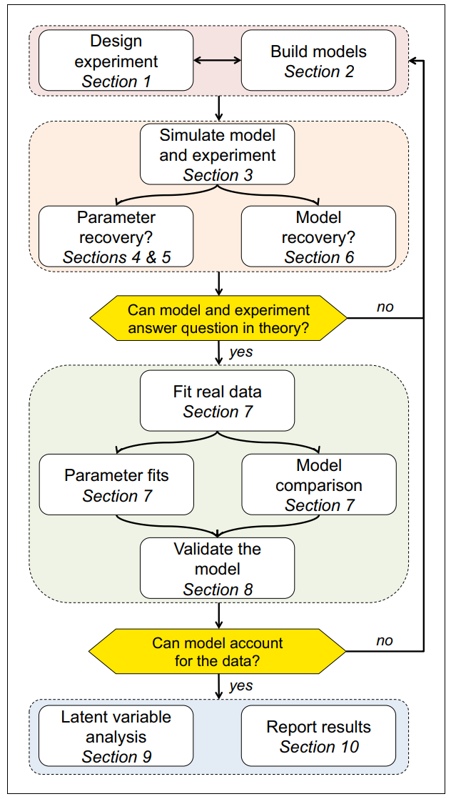
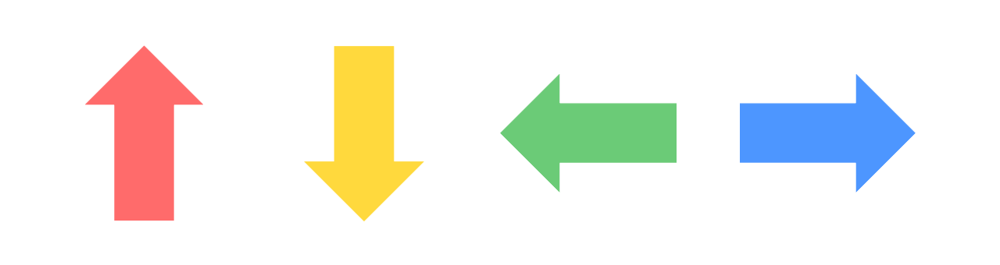

Overview
This package is designed to help users build the Rescorla-Wagner Model for Multi-Armed Bandit tasks (for TAFC see binaryRL). Beginners can define models using simple if-else logic, making model construction more accessible.
Installation
# Install the latest version from GitHub
remotes::install_github("yuki-961004/multiRL@*release")
# Load package
library(multiRL)Features
- Designed for Multi-Armed Bandit Tasks (see Sutton & Barto, 2018).
- Includes three basic models (Niv et al., 2012)
- Follows the ten simple rules (Wilson & Collins 2019)



Upgrades
# learning-rate
binaryRL::func_eta -> multiRL::func_alpha
# soft-max
binaryRL::func_tau -> multiRL::func_beta
# utility function
binaryRL::func_gamma -> multiRL::func_gamma
# upper-confidence-bound
binaryRL::func_pi -> multiRL::func_delta
# ε-(first, greedy, decrasing)
binaryRL::func_epsilon -> multiRL::func_epsilonLatent Learning Rules

Reference
- Eckstein, M. K., & Collins, A. G. (2020). Computational evidence for hierarchically structured reinforcement learning in humans. Proceedings of the National Academy of Sciences, 117(47), 29381-29389. https://doi.org/10.1073/pnas.1912330117
Working-Memory System
multiRL::func_zeta()\[ W_{new} = W_{old} + \zeta \cdot (W_{0} - W_{old}) \]
Reference
- Collins, A. G., & Frank, M. J. (2012). How much of reinforcement learning is working memory, not reinforcement learning? A behavioral, computational, and neurogenetic analysis. European Journal of Neuroscience, 35(7), 1024-1035. https://doi.org/10.1111/j.1460-9568.2011.07980.x